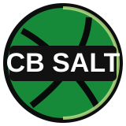

CB Salt U18
Preparació del partit · Jornada 4

CB Salt U18
Rival de l’AB Premià Blau
03/10/2026 · 16:00 · CasaPosició1r
Balanç3–0
PF/P86.3
PC/P70.0
DIF/P+16.3
Classificació
#EquipJGPts
1CB SALT U18336
2AB PREMIÀ BLAU336
3CB SANT CELONI U18M325
4CB BLANES A325
5CB FARNERS A314
6CB CALELLA314
7SOL GIRONÈS BISBAL303
8CB BOET MATARÓ303
Últims partits
| Data | Rival | Resultat | DIF |
|---|---|---|---|
| 27/09 | CB Blanes A | 88–67 | +21 |
| 20/09 | Sol Gironès Bisbal | 71–70 | +1 |
| 13/09 | CB Calella | 100–73 | +27 |
3–0 · 259 PF · 210 PCCasa: 2–0 (+24.0) · Fora: 1–0 (+1.0)
Comparativa directa
CB Salt U18
1r · 3–0
86.3 PF/P · +16.3
70.0 PC/P
AB Premià Blau
2n · 3–0
74.0 PF/P · +11.3
62.7 PC/P
Producció ofensiva
2 PUNTS52.5%
136 punts3 PUNTS27.8%
72 puntsTIR LLIURE19.7%
51 punts · 51/81Jugadors clau
JugadorMIN/PPTS/PTL%
11 Narcís Vidal García29.121.775.0
17 Pau Gay Hereu20.914.065.5
4 Grau Paradinas Delgado24.39.3100.0
26 Styve Fokem Fomekong17.28.771.4
7 Oriol Jaimez Termens13.96.775.0
Lectura per scouting
Rival invicte i de producció alta
3–0, 86.3 punts a favor i +16.3 de diferencial per partit.
Fora baixa el marge
El seu únic partit fora va acabar 71–70. Cal buscar un partit controlat i igualat.
Protegir pintura i evitar bonus
El 52.5% dels punts són de dos i generen 27.0 intents de tir lliure per partit.
Pla de partit AB Premià Blau
Objectius defensius
- Protegir pintura i tancar rebot.
- Defensar verticals per reduir tirs lliures.
- Negar recepcions còmodes a Narcís i Pau.
Objectius ofensius
- Jugar amb paciència i no precipitar tirs.
- Buscar avantatges abans que la defensa es reorganitzi.
Gestió i riscos
- Mantenir el partit igualat fins al final.
- Evitar pèrdues en transició i segones opcions.